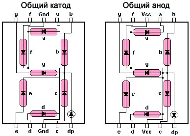
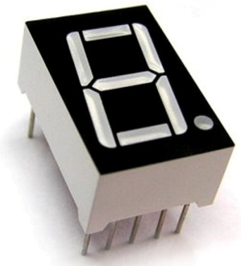
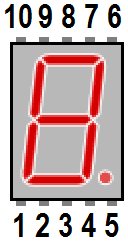
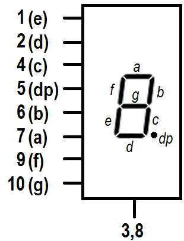
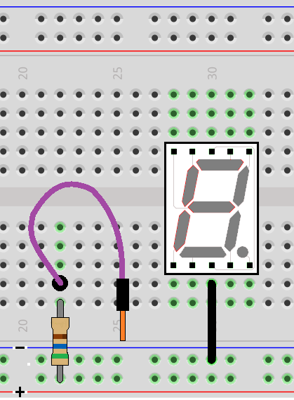
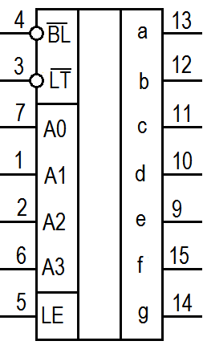
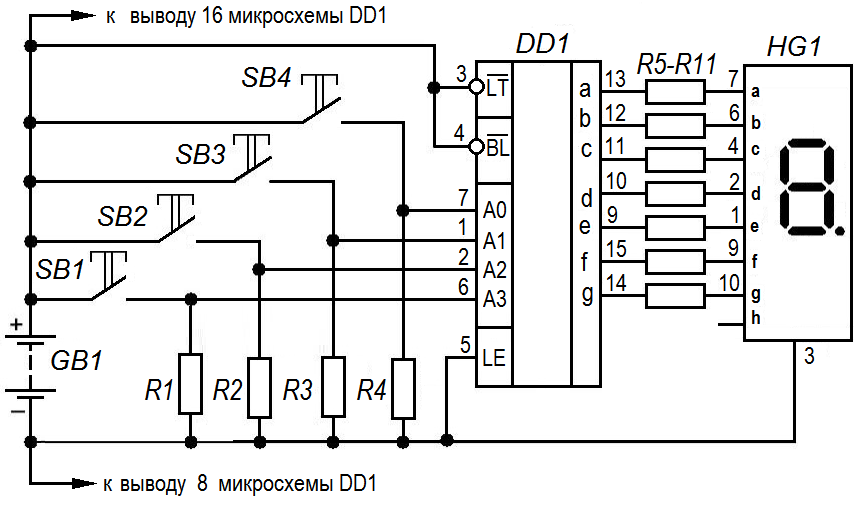

Управление семисегментным индикатором
Семисегментный индикатор состоит из семи элементов (или сегментов) индикации, каждый из которых можно включать и выключать независимо от других. Включая сегменты в разных комбинациях, можно составить упрощенные изображения арабских цифр и некоторых букв. Каждый сегмент — это отдельный светодиод. Между собой светодиоды могут соединяться катодами («с общим катодом») или анодами («с общим анодом») (рис. 1).

На рисунке 2 показаны нумерация выводов и условное графическое обозначение семисегментного индикатора с общим катодом. Выводы индикатора нумеруются последовательно, против часовой стрелки, начиная с нижнего левого.



Для проверки работы семисегментного индикатора соберем на макетной плате простую схему (рис. 3). На макетную плату установите семисегментный индикатор и подключите вывод 3 к шине «-». Один вывод резистора сопротивлением 560 Ом установите на шине «+», другой – на свободное поле. Один конец гибкого соединительного провода присоедините к свободному выводу резистора сопротивлением 560 Ом. Свободный конец соединительного провода поочередно соединяйте с выводами (кроме 8) семисегментного индикатора. Соответствующие сегменты индикатора при этом дожны светиться.

Чтобы отобразить конкретную цифру, необходимо включить отдельные сегменты, как показано в таблице 1.
Таблица 1
| Цифра | Сегменты | ||||||
|---|---|---|---|---|---|---|---|
| a | b | c | d | e | f | g | |
| 0 | вкл | вкл | вкл | вкл | вкл | вкл | выкл |
| 1 | выкл | вкл | вкл | выкл | выкл | выкл | выкл |
| 2 | вкл | вкл | выкл | вкл | вкл | выкл | вкл |
| 3 | вкл | вкл | вкл | вкл | выкл | выкл | вкл |
| 4 | выкл | вкл | вкл | выкл | выкл | вкл | вкл |
| 5 | вкл | выкл | вкл | вкл | выкл | вкл | вкл |
| 6 | вкл | выкл | вкл | вкл | вкл | вкл | вкл |
| 7 | вкл | вкл | вкл | выкл | выкл | выкл | выкл |
| 8 | вкл | вкл | вкл | вкл | вкл | вкл | вкл |
| 9 | вкл | вкл | вкл | вкл | выкл | вкл | вкл |
В электронных схемах, чаще всего, цифровые индикаторы используют с двоично-семисегментным дешифратором. Микросхема двоично-семисегментного дешифратора (декодера) содержит в себе логическую схему, преобразующую 4-х битное число (от 0000 до 1001) в десятичное (от 0 до 9), а десятичное в 7 сигналов для семисегментного цифрового индикатора, который отобразит, одну из цифр от 0 до 9.
На рис. 4 представлено условное графическое обозначение микросхемы двоично-семисегментного дешифратора CD4511BE.

Таблица 2
| Номер вывода | Назначение | Номер вывода | Назначение | |
|---|---|---|---|---|
| 1 | Вход A1 | 9 | Сегмент «е» | |
| 2 | Вход A2 | 10 | Сегмент «d» | |
| 3 | Тест индикатора | 11 | Сегмент «c» | |
| 4 | Гашение | 12 | Сегмент «b» | |
| 5 | Разрешение загрузки | 13 | Сегмент «a» | |
| 6 | Вход A3 | 14 | Сегмент «g» | |
| 7 | Вход A0 | 15 | Сегмент «f» | |
| 8 | «-» питания (общий) | 16 | «+» питания |
Четырехразрядный двоичный код подается на входы A0-A3. Микросхема CD4511BE содержит дополнительный 4-х битный регистр-защёлку, который может запоминать код отображаемого числа в независимости от состояния на входах A0, A1, A2, A3. Запоминание числа выставленного на входах A0-A3 в регистре-защёлке происходит в момент перехода сигнала на управляющем входе LE от низкого уровня к высокому.
Когда на входе LE микросхемы CD4511BE установлен сигнал низкого уровня, микросхема CD4511BE непосредственно преобразует двоичный код на входе в код для семисегментного цифрового индикатора на выходе. У микросхемы CD4511BE есть два инверсных входа: LT - включить все сегменты индикатора (Lamp Test) и BL - выключить индикатор (BLanking). При низком уровне сигнала на выводе LT, индикатор должен зажечь все свои сегменты. Низкий уровень сигнала на входе BL гасит индикатор, но при этом в регистре микросхемы загруженное число сохраняется. При логической «1» микросхема работает от входа A0-А1.
Питание микросхемы осуществляется постоянным током напряжением 3…18 В. Максимальный выходной ток до 25 мА.
Схема управления семисегментным индикатором с помощью дешифратора двоичного кода CD4511BE показана на рис. 5.

Таблица 3
| Позиционное обозначение | Наименование | Кол-во |
|---|---|---|
| DD1 | Микросхема CD4511BE | 1 |
| GB1 | Батарейка «Крона» 9 В | 1 |
| HG1 | Семисегментный индикатор | 1 |
| R1-R4 | Резистор сопротивлением 1,2 кОм | 4 |
| R5-R11 | Резистор сопротивлением 560 Ом | 7 |
| SB1-SB4 | Кнопка | 4 |
Резисторы R1-R4 обеспечивают на входах А0-А3 низкий уровень, при отсутствии сигнала. Без них показания на индикаторе могут отображаться некорректно. При нажатии на кнопки SB1-SB4 на входы дешифратора подается логическая единица от плюса питания.
Резисторы R5-R11 ограничивают рабочий ток светодиодных элементов. Сопротивление этих резисторов должно обеспечивать необходимую яркость сегментов. Резисторы обязательно включать последовательно с каждым сегментом индикатора.
При отсутствии сигнала отображается цифра ноль. Для отображения на индикаторе чисел 1, 2, 4 и 8 требуется нажатие лишь одной из кнопок SB1-SB4. Для отображения других цифр требуется нажатие комбинации кнопок (таблица 4).
Таблица 4
| Цифра | Входы | |||
|---|---|---|---|---|
| A3 | A2 | A1 | A0 | |
| 0 | 0 | 0 | 0 | 0 |
| 1 | 0 | 0 | 0 | 1 |
| 2 | 0 | 0 | 1 | 0 |
| 3 | 0 | 0 | 1 | 1 |
| 4 | 0 | 1 | 0 | 0 |
| 5 | 0 | 1 | 0 | 1 |
| 6 | 0 | 1 | 1 | 0 |
| 7 | 0 | 1 | 1 | 1 |
| 8 | 1 | 0 | 0 | 0 |
| 9 | 1 | 0 | 0 | 1 |
Чтобы отобразить цифру "3" необходимо логическую единицу подать на вход D0 и D1. Если подать сигнал на D0 и D2, то отобразится цифра "5" (рис.6).
Источники
cxem.net - Управление семисегментным индикатором
Тихонов Р.В. Методические рекомендации для проведения занятий в кружках Национальной киберфизической платформы по программе «Основы схемотехники» — М.: Ассоциация участников технологических кружков, 2023. — 104 с.